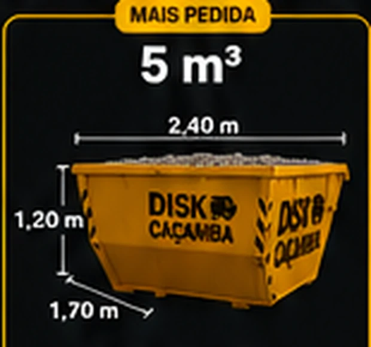
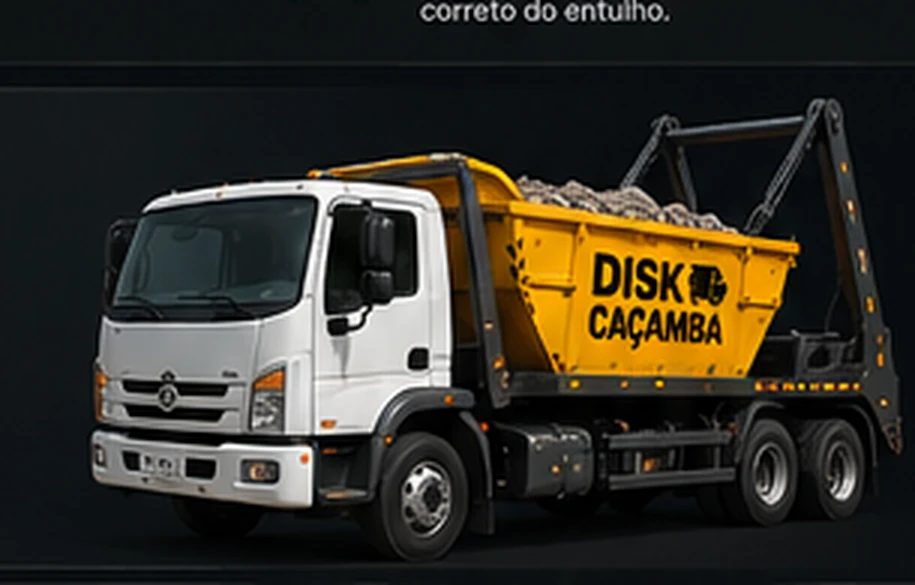

São Paulo e Grande SP
Aluguel de
caçamba em
São Paulo
Solução rápida, prática e segura para remoção de entulho da sua obra.
+8.000caçambas alugadas
4,9/5avaliação dos clientes
+10 anosde experiência
Todos os diasatendimento
Escolha o tamanho ideal
Medidas aproximadas. O modelo pode variar conforme disponibilidade.
3 m³
1,80 m

1,10 m altura · 1,20 m largura
Pequenas limpezas e reformas.
Reservar4 m³
2,10 m
1,10 m altura · 1,50 m largura
Reformas residenciais.
Reservar5 m³
2,40 m
1,20 m altura · 1,70 m largura
Reformas em geral e limpeza pesada.
Reservar7 m³
2,90 m
1,20 m altura · 1,90 m largura
Obras médias e grandes reformas.
Reservar10 m³
3,50 m
1,40 m altura · 1,90 m largura
Grandes obras e construções.
Reservar16 m³
4,10 m
1,60 m altura · 2,90 m largura
Grandes volumes e demolições.
ConsultarPor que escolher a Disk Caçamba?
Atendemos
Todas as regiões de São Paulo
Capital completa, com atendimento nas cinco regiões e em todas as 32 subprefeituras.
Verificar disponibilidadeZona Norte
Zona Oeste
Centro
Zona Leste
Zona Sul
32 subprefeituras atendidas
- Aricanduva/Formosa/Carrão
- Butantã
- Campo Limpo
- Capela do Socorro
- Casa Verde/Cachoeirinha
- Cidade Ademar
- Cidade Tiradentes
- Ermelino Matarazzo
- Freguesia/Brasilândia
- Guaianases
- Ipiranga
- Itaim Paulista
- Itaquera
- Jabaquara
- Jaçanã/Tremembé
- Lapa
- M'Boi Mirim
- Mooca
- Parelheiros
- Penha
- Perus
- Pinheiros
- Pirituba/Jaraguá
- Santana/Tucuruvi
- Santo Amaro
- São Mateus
- São Miguel Paulista
- Sapopemba
- Sé
- Vila Maria/Vila Guilherme
- Vila Mariana
- Vila Prudente
Como funciona?
Perguntas frequentes
Qual é o prazo de entrega?
A entrega depende da disponibilidade, região e horário. Consulte a equipe para confirmação.
Posso colocar qualquer material?
Não. Tintas, químicos, pneus, lixo hospitalar e outros resíduos especiais exigem destinação específica.
Quanto tempo posso ficar com a caçamba?
O período é informado na reserva e pode variar conforme o serviço contratado.
Como é feito o pagamento?
As opções disponíveis são apresentadas no atendimento ou no checkout online.
Pronto para alugar sua caçamba?
Fale com a equipe agora ou faça sua reserva online.
Chamar no WhatsAppReservar online